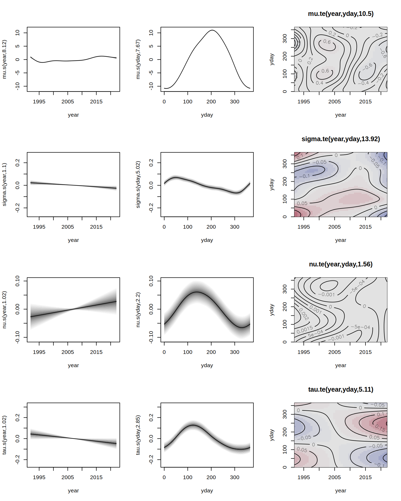
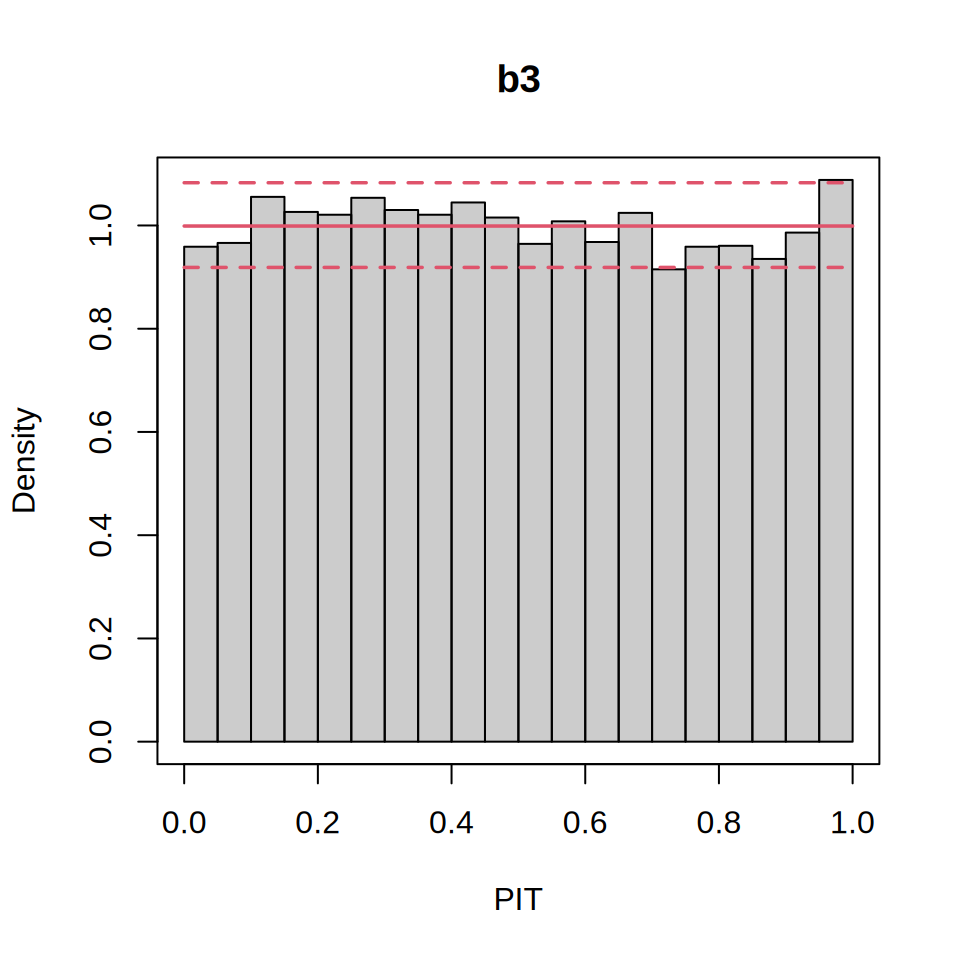
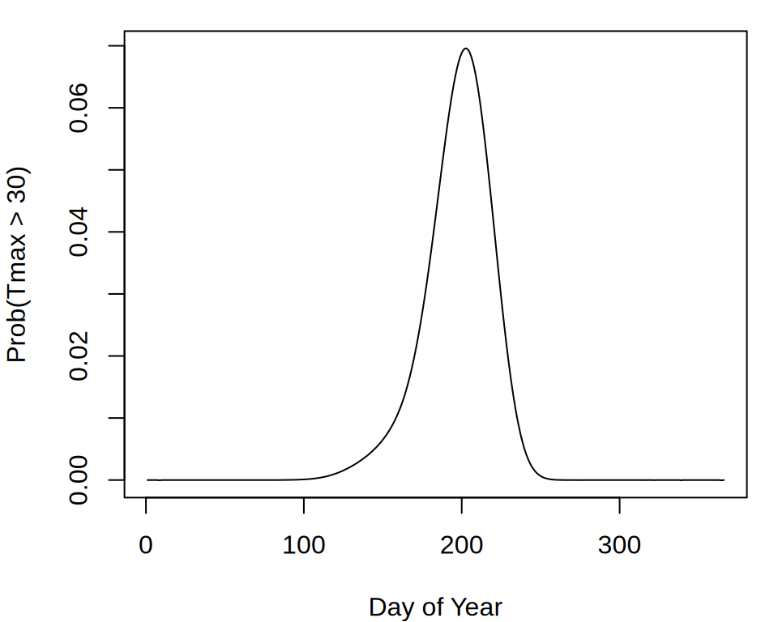

if(!("gamlss" %in% installed.packages())) {
install.packages("gamlss")
}
library("gamlss")
library("gamlss2")First Steps
The package is designed to follow the workflow of well-established model fitting functions like lm() or glm(), i.e., the step of estimating full distributional regression models is actually not very difficult.
We illustrate how gamlss2 builds on the established gamlss framework by modeling daily maximum temperature (Tmax) at Munich Airport (MUC) to estimate the probability of “heat days” (Tmax \(\geq 30^\circ\text{C}\)). Heat days can have serious impacts by stressing highways and railways, increasing the load on healthcare facilities, and affecting airport operations. Using 30 years of historical Tmax data, we fit a flexible distributional regression model that captures the full conditional distribution of daily temperatures. By evaluating this fitted distribution at the \(30^\circ\text{C}\) threshold, we obtain heat-day probabilities. Required packages can be loaded by
The data comes from the same R-universe as gamlss2 and is loaded with
if(!("WeatherGermany" %in% installed.packages())) {
install.packages('WeatherGermany',
repos = c("https://gamlss-dev.r-universe.dev",
"https://cloud.r-project.org"))
}Installing package into '/usr/local/lib/R/site-library'
(as 'lib' is unspecified)data("WeatherGermany", package = "WeatherGermany")
MUC <- subset(WeatherGermany, id == 1262)We find that the four-parameter SEP family fits the marginal distribution of Tmax quite well. To estimate a full distributional model, we specify the following additive predictor
\(\eta = \beta_0 + f_1(\texttt{year}) + f_2(\texttt{yday}) + f_3(\texttt{year}, \texttt{yday})\)
for each parameter. Here, \(f_1( \cdot )\) captures the long-term trend, \(f_2( \cdot )\) models seasonal variation, and \(f_3( \cdot, \cdot )\) represents a time-varying seasonal effect. The required variables can be added to the data by
MUC$year <- as.POSIXlt(MUC$date)$year + 1900
MUC$yday <- as.POSIXlt(MUC$date)$ydayIn gamlss, model estimation is performed via
if(!("gamlss.add" %in% installed.packages())) {
install.packages("gamlss.add",
repos = c("https://gamlss-dev.r-universe.dev",
"https://cloud.r-project.org"))
}
library("gamlss.add")f1 <- Tmax ~ ga(~ s(year) + s(yday, bs = "cc") +
te(year, yday, bs = c("cr", "cc")))
b1 <- gamlss(f1, family = SEP,
data = MUC[, c("Tmax", "year", "yday")])GAMLSS-RS iteration 1: Global Deviance = 65081.31
GAMLSS-RS iteration 2: Global Deviance = 64953.19
GAMLSS-RS iteration 3: Global Deviance = 64893.26
GAMLSS-RS iteration 4: Global Deviance = 64869.21
GAMLSS-RS iteration 5: Global Deviance = 64859.01
GAMLSS-RS iteration 6: Global Deviance = 64854.42
GAMLSS-RS iteration 7: Global Deviance = 64852.19
GAMLSS-RS iteration 8: Global Deviance = 64850.94
GAMLSS-RS iteration 9: Global Deviance = 64850.14
GAMLSS-RS iteration 10: Global Deviance = 64849.54
GAMLSS-RS iteration 11: Global Deviance = 64849.04
GAMLSS-RS iteration 12: Global Deviance = 64848.58
GAMLSS-RS iteration 13: Global Deviance = 64848.13
GAMLSS-RS iteration 14: Global Deviance = 64847.73
GAMLSS-RS iteration 15: Global Deviance = 64847.33
GAMLSS-RS iteration 16: Global Deviance = 64846.94
GAMLSS-RS iteration 17: Global Deviance = 64846.56
GAMLSS-RS iteration 18: Global Deviance = 64846.19
GAMLSS-RS iteration 19: Global Deviance = 64845.83
GAMLSS-RS iteration 20: Global Deviance = 64845.48 Warning in RS(): Algorithm RS has not yet convergedThis setup requires loading the gamlss.add package to access mgcv-based smooth terms. Estimation takes 20 iterations of the backfitting algorithm (without full convergence) and about 44 seconds on a 64-bit Linux system. Moreover, gamlss() requires that the input data contains no NA values. In gamlss2 the model can be specified directly, following mgcv syntax
f2 <- Tmax ~ s(year) + s(yday, bs = "cc") +
te(year, yday, bs = c("cr", "cc"))
b2 <- gamlss2(f2, family = SEP, data = MUC)GAMLSS-RS iteration 1: Global Deviance = 65324.7384 eps = 0.572867
GAMLSS-RS iteration 2: Global Deviance = 65123.5052 eps = 0.003080
GAMLSS-RS iteration 3: Global Deviance = 64958.3935 eps = 0.002535
GAMLSS-RS iteration 4: Global Deviance = 64895.5652 eps = 0.000967
GAMLSS-RS iteration 5: Global Deviance = 64870.451 eps = 0.000386
GAMLSS-RS iteration 6: Global Deviance = 64859.882 eps = 0.000162
GAMLSS-RS iteration 7: Global Deviance = 64855.119 eps = 0.000073
GAMLSS-RS iteration 8: Global Deviance = 64852.7612 eps = 0.000036
GAMLSS-RS iteration 9: Global Deviance = 64851.4502 eps = 0.000020
GAMLSS-RS iteration 10: Global Deviance = 64850.6059 eps = 0.000013
GAMLSS-RS iteration 11: Global Deviance = 64849.9925 eps = 0.000009 This model converges in 11 iterations and requires only about 2 seconds of computation time, yielding a similar deviance (small differences arise due to differences in smoothing parameter optimization). In many applications, it is desirable to use the same predictor structure for all distribution parameters. In gamlss, this requires specifying identical formulas separately via sigma.formula, nu.formula, and tau.formula, which can be tedious. In gamlss2, this is simplified using “.”
f3 <- Tmax ~ s(year) + s(yday, bs = "cc") +
te(year, yday, bs = c("cr", "cc")) | . | . | .
b3 <- gamlss2(f3, family = SEP, data = MUC)GAMLSS-RS iteration 1: Global Deviance = 64910.0053 eps = 0.575579
GAMLSS-RS iteration 2: Global Deviance = 64713.9993 eps = 0.003019
GAMLSS-RS iteration 3: Global Deviance = 64643.0265 eps = 0.001096
GAMLSS-RS iteration 4: Global Deviance = 64612.3237 eps = 0.000474
GAMLSS-RS iteration 5: Global Deviance = 64598.0758 eps = 0.000220
GAMLSS-RS iteration 6: Global Deviance = 64591.2022 eps = 0.000106
GAMLSS-RS iteration 7: Global Deviance = 64587.545 eps = 0.000056
GAMLSS-RS iteration 8: Global Deviance = 64585.2307 eps = 0.000035
GAMLSS-RS iteration 9: Global Deviance = 64583.7455 eps = 0.000023
GAMLSS-RS iteration 10: Global Deviance = 64582.5489 eps = 0.000018
GAMLSS-RS iteration 11: Global Deviance = 64581.6112 eps = 0.000014
GAMLSS-RS iteration 12: Global Deviance = 64580.7955 eps = 0.000012
GAMLSS-RS iteration 13: Global Deviance = 64580.0544 eps = 0.000011
GAMLSS-RS iteration 14: Global Deviance = 64579.3601 eps = 0.000010
GAMLSS-RS iteration 15: Global Deviance = 64578.7003 eps = 0.000010
GAMLSS-RS iteration 16: Global Deviance = 64578.0686 eps = 0.000009 This model converges in 20 iterations in about 30 seconds. After estimation, results can be inspected using the summary() method for both packages. Using plot() in gamlss produces standard residual diagnostic plots, whereas in gamlss2
plot(b3)
displays all estimated covariate effects. For residual diagnostics, gamlss2 leverages the topmodels package, which provides infrastructures for probabilistic model assessment. E.g., a PIT histogram can be created by
if(!("topmodels" %in% installed.packages())) {
install.packages("topmodels", repos = "https://zeileis.R-universe.dev")
}
library("topmodels")
pithist(b3)
showing good model calibration. Finally, we compute the probability of a heat day for 2025. First, the procast() function from `topmodels predicts the fitted distributions
nd <- data.frame("year" = 2025, "yday" = 0:365)
pf <- procast(b3, newdata = nd, drop = TRUE)This yields a distribution vector pf using the infrastructure from the distributions3 package. Probabilities of a heat day can then be calculated with the corresponding cdf() method.
if(!("distributions3" %in% installed.packages())) {
install.packages("distributions3")
}
library("distributions3")
probs <- 1 - cdf(pf, 30)and visualized, for example, by
par(mar = c(4, 4, 1, 1))
plot(probs, type = "l", xlab = "Day of Year",
ylab = "Prob(Tmax > 30)")
Note that a predict() method is available for both gamlss and gamlss2, allowing direct prediction of distribution parameters. However, in gamlss, predict() may not fully support new data in all cases.
References
Rigby, R. A., and D. M. Stasinopoulos. 2005. “Generalized Additive Models for Location, Scale and Shape.” Journal of the Royal Statistical Society C 54 (3): 507–54. https://doi.org/10.1111/j.1467-9876.2005.00510.x.